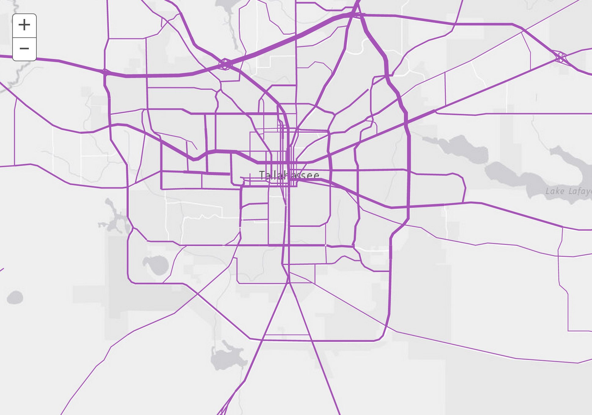

Designing maps
with ArcGIS
In the beginning
a map was born...
// Create map
var map = L.map('map').setView([37.75, -122.23], 10);
// Assign base map type
L.esri.basemapLayer('Topographic').addTo(map);
How does it all work?
Data!
Data
Data
Data
Data!
Data Types
KML
CSV
SHP
XML
...
Web Services
Map
Feature
Geoprocessing
Geocode
Imagery
Network
and many more!
Data
Points
Lines
Polygon
and more...
GeoJSON Point
var point =
{
"type": "Point",
"coordinates": [100.0, 0.0]
}
GeoJSON Line
var line =
{
"type": "LineString",
"coordinates": [ [100.0, 0.0], [101.0, 1.0] ]
}
GeoJSON Polygon
var polygon =
{
"type": "Polygon",
"coordinates": [
[
[100.0, 0.0], [101.0, 0.0], [101.0, 1.0],
[100.0, 1.0], [100.0, 0.0]
]
]
}
GeoJSON Feature
{
"type":"Feature",
"id":3,
"geometry":{
"type":"Point",
"coordinates":[
-122.68287749,
45.526496967
]
},
"properties":{
"FID":3,
"PlaceName":"Starbucks",
"Place_addr":"1134 NW Glisan St Portland Oregon",
"Score":100,
"lat":45.526496967,
"lon":-122.68287749
}
}
Data storage
Tablet/phone
Laptop/desktop
Server
Cloud
Cartographic Design
Map styling
Symbology
Two choices
ArcGIS Online
&
APIs
developers.arcgis.com
Cloud-based map design
Analysis tools
Spatial database
RESTful web services
Demo
developers.arcgis.com
APIs
JavaScript
Android
iOS
.NET
Java
Python
and more!
Renderers
ClassBreaksRenderer
DotDensityRenderer
HeatmapRenderer
ScaleDependentRenderer
TemporalRenderer
and many more...
Proportional Line Renderer

Symbology
CartographicLineSymbol
FillSymbol
LineSymbol
PictureMarkerSymbol
and many more...
SimpleFillSymbol (Editable)
SimpleLineSymbol (Editable)
GeoDev meetups!
Geo-spatial social
Staying Connected
#geodev
DevSummit 2015
March 9 - 12
developers.arcgis.com
Docs and Samples
Creating services
Hosting data
Free dev subscription!
Free!
developers.arcgis.com
1000 Credits
TURING2015
Sign up by 12/26/14
Use by 6/26/15
Sign up!
developers.arcgis.com
Redeem Voucher

Enter Code

@agup
agup@esri.com
andygup.net